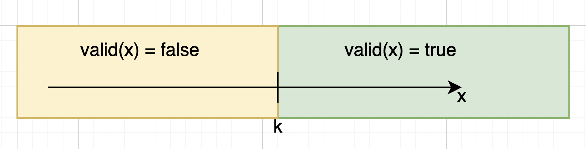

..
🐏 Binary Search on Answer
Бинарный поиск по ответу
Пусть у нас есть некоторая функция valid: x -> bool, имеющая некоторое граничное значение k:

В задаче может требоваться найти:
- max значение х, такое что valid(x) = false
- min значение х, такое что valid(x) = true
Идея: применить бинарный поиск к возможным значениям ответа (корректность которых оценивает функция valid).
69. Sqrt(x)
func valid(r, x int) bool {
if r*r <= x {
return true
}
return false
}
// ищем max valid int, который бы в квадрате не превышал x
func mySqrt(x int) int {
a := 0
for k := x; k >= 1; k /= 2 {
for valid(a+k, x) {
a += k
}
}
return a
}
367. Valid Perfect Square
func valid(r, x int) bool {
if r*r <= x {
return true
}
return false
}
func isPerfectSquare(num int) bool {
i := 0
// ищем максимальный int,
// который бы в квадрате не превышал num
for k := num; k >= 1; k /= 2 {
for valid(i+k, num) {
i += k
}
}
// если найденное значение в квадрате
// совпадает с num - ответ true
if i*i == num {
return true
}
return false
}